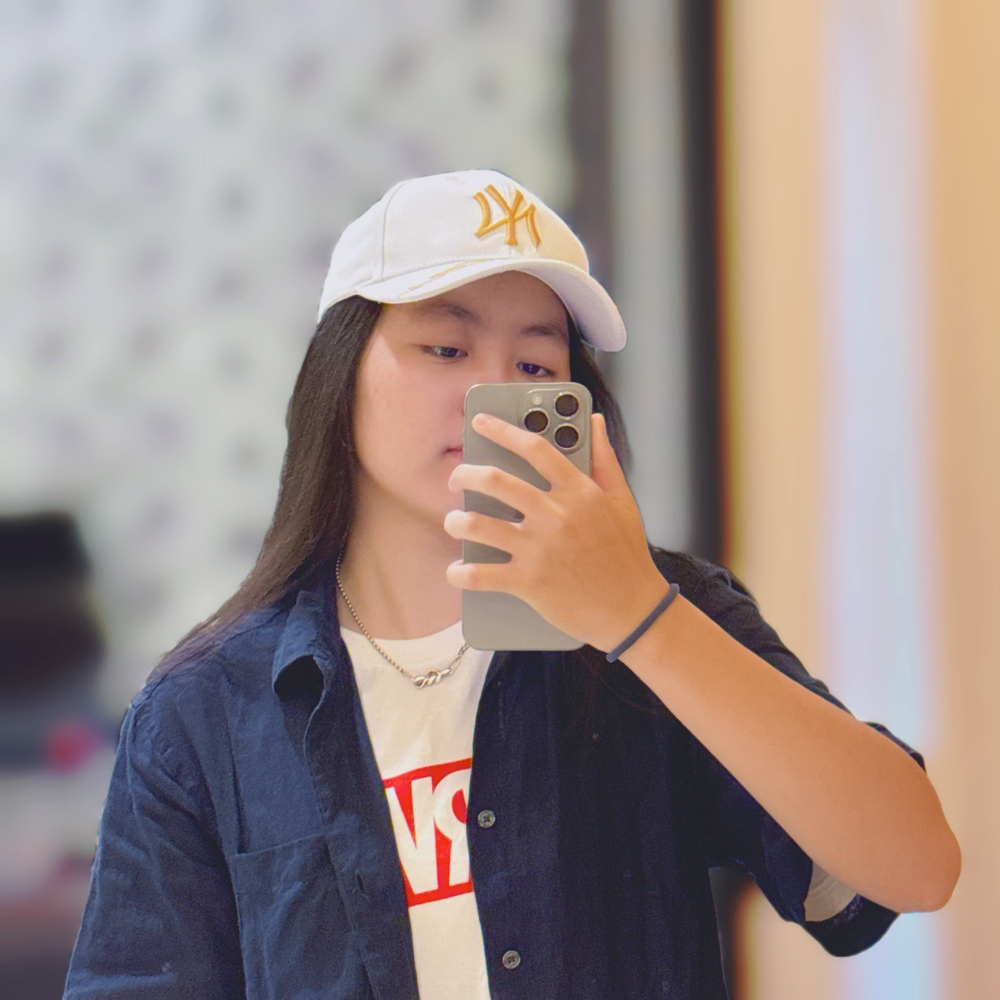

生存 Buff
人格類型
ENFJ-A 隱藏型社交咖
座標
台中｜晴時多雲偶爾浪漫
主修
台中科技大學 資訊工程系
興趣
心理學研究、運動系癮君子
Tech Stack
Swift, C++, Python, PHP
iOS
IoT
Crawler
Skill Spectrum
// Software & Logic
Swift / iOS
75%
C++ / C
80% / 75%
Python
80%
Web (HTML / CSS / JS)
80% / 65% / 65%
PHP / Java
70% / 75%
// Systems & Hardware
Arduino / Embedded
80%
Linux System
75%
Internet of Things (IoT)
70%
技術是實現浪漫的手段。我不只寫代碼，我用代碼建構世界。
Personal Projects
「邏輯與創意的實踐場所，目前包含 iOS 開發與系統整合。」
PROJECT UNDERWAY
Building something wonderful...Digital Garden
「於此處分享知識，在星光下紀錄生活。」


Psychology & Thoughts
「捕捉那些轉瞬即逝的思考碎片。」